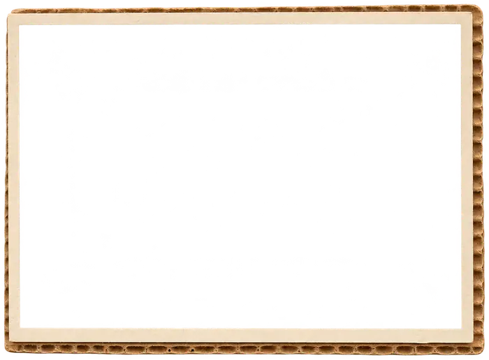
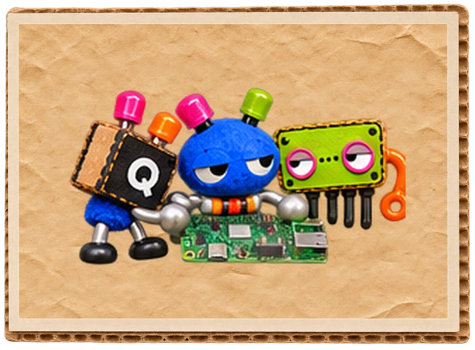
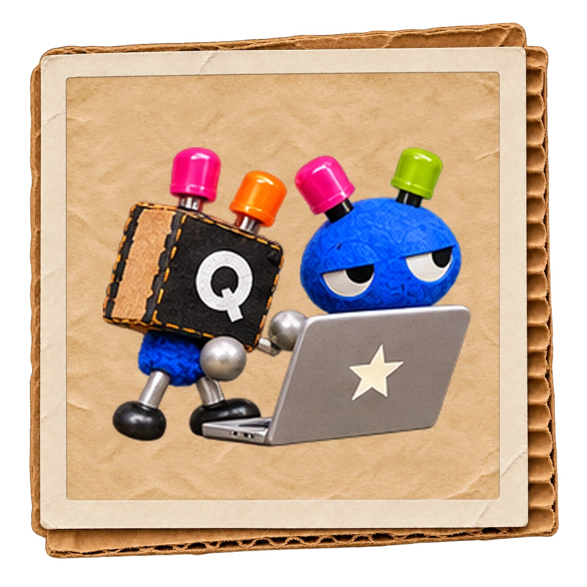

the laba working studio


A LAB IN MARRICKVILLE
Qwerty Labs is an independent creative technology studio in Marrickville, Sydney. We started out as QwertyKids in 2016, making things with young people.
We're now developing mentoring and workshops for grown-up makers too.
That's Lucky in the photo, being enormously helpful.



Why a lab?
Most of us spend a fair bit of our lives using things other people have made. We think it's rather exciting to be the person making them.
We called it a lab for a reason. It's somewhere to experiment, follow an idea and try things we don't yet know how to make. Sometimes we're as curious about what happens next as the people we're teaching.

How we teach
What do you want to make? We ask that a lot. Beginners often start with a guided project, then use what they've learnt to develop ideas of their own.
If a game needs to keep score, there's a good reason to learn about variables. If a robot needs to stop before it hits the wall, it's time to investigate sensors.
We teach in small groups, with around one tutor for seven young makers. We check in regularly, demonstrate techniques and help investigate problems. As makers gain experience, they make more of the decisions. Not everybody has to make the same thing.
Have a look at what we make and the tools we use.

Made here
Two of our teenagers, Zach and Chloe, noticed that younger kids were having trouble understanding where their code went. So they made a cloud.
Using a Raspberry Pi, lights, buttons and sounds, they made the journey from website to computer to device visible, including what happens when things go wrong.
Of more than 4,500 projects shared at the Raspberry Pi Foundation's Coolest Projects showcase in 2026, Project Code Cloud was the only Australian project selected as an international VIP judge's favourite. The Prime Minister's office wrote to congratulate them.
What we love most is that they made it for the younger kids.
Makers teach
Our tutors write code and make things too. It helps to learn from somebody who's spent a fair bit of time tracking down bugs of their own.
Dannielle Chun (DC)
Founder & Lead Educator
DC develops our programmes and teaches in the studio, drawing on more than two decades of professional digital production.
DC's fascination with technology began at nine when she discovered Merlin the Electronic Wizard, one of the earliest handheld electronic games.
In 1997, she made her first hyperlink. It went to NASA. Of course it did.
DC began her career as a web developer at the multi-award-winning ABC Science Online website, then known as The Lab.
She developed websites for Dr Karl and the Surfing Scientist, moderated the online forum where the word ‘selfie’ first appeared, coded the ABC's earliest podcasts and videos, and later designed the user experience for Radio National's podcast library.
At Microsoft Australia, she led digital strategy across its developer, IT professional and education channels, creating applications that were subsequently adopted by Microsoft teams around the world.
In 2016, DC set out to create a version of the original ABC Lab for children: somewhere to experiment with technology, follow interesting ideas and make things that didn't exist yesterday.
Around 1,500 young people have made things here since. Some came for a day. Others kept coming back for years.
Ten years later, the idea has turned out to be just as relevant to adults.
DC holds a Bachelor of Media from Macquarie University and a Teaching Certificate from Cambridge University.


Mail from space
At ABC Science Online, Dannielle built the National Science Week website. One year, she received a letter addressed to her from the International Space Station.
Inside was a video from the astronauts wishing Australia a happy National Science Week, for DC to put online.
She kept the video. Not the envelope. Naturally.
Growing up
Some of our young makers start at seven and keep coming well into their teens. We get to watch their projects become more ambitious, and one of the loveliest things is seeing them help younger kids.
Somebody's making a game, somebody else is investigating a misbehaving circuit. There's probably a bit of cardboard involved. We try each other's creations, laugh a lot and still squeal when the stuff we make does things.
Zach joined us at nine. Four years later, we got an account of what it's like to be a student here. Apparently we're funny. Well, most of the time.
We take the projects seriously. Ourselves, less so.

Making well
When we make something for others, can they use it if they can't see the screen? What if they use it in a way we didn't anticipate? These are questions worth asking while we're designing something. We'll explore them with adults in our Make It Well workshops.
Parents entrust us with their children. We follow NSW Working With Children Check requirements, and parents are welcome to ask about verification details. Read our Child Safety policy.
Join us
We run weekly classes and holiday camps for kids aged 7–12 and teens aged 13–17. For adults, we're developing mentoring and group workshops, online and at the Lab.
Level 1, 230 Marrickville Road, Marrickville NSW 2204.
Look for the entrance beside Pizza Hut. Visits are by arrangement.

Send us a text
Fields marked * are required.

Get making

Explore